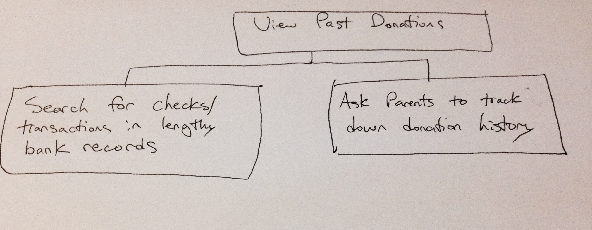
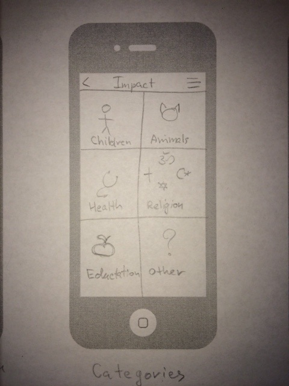
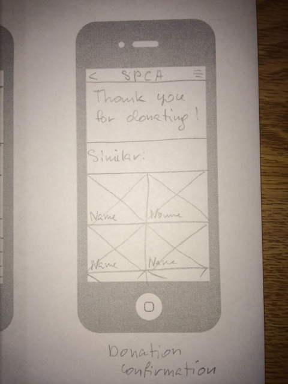
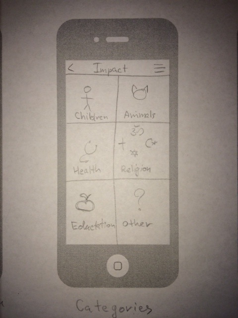
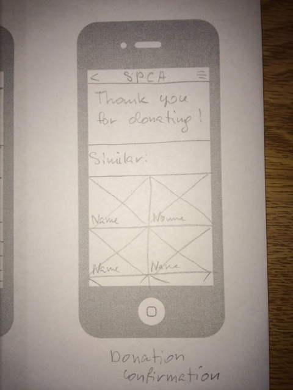

Impact
Problem
When it comes to donating to charities, many people find it hard to give away sizeable portions of their hard-earned income to organizations that claim to use the donations for a good cause. Part of this issue is that people lack an easy way to donate directly and easily to an organization they support. In addition, many people simply do not know about the charities and organizations that exist to address the causes they care about. Our theory at Impact is that people would be more willing to donate money to charities if they could do so in small payments, and in as few steps as possible. This concept will help to eliminate the typical deterring factors of donating money to charities by giving as much control to users as possible. We at Impact believe that there is a good heart in everyone, and that will be essential to the growth of our product.
Personas
Primary Stakeholders: Our target audience includes individuals between the ages of 18-35.
Jimbo Slice is a 23 year old recent Northeastern University business graduate working his first job out of college at a small company in Boston, MA. As he had a number of scholarships and significant financial aid at his university, Jimbo retains only a relatively low amount of student-loans to pay off in the next few years. In the past, Jimbo has volunteered for a number of animal-shelters throughout his college career. However, with the long hours he has been working at his company, he no longer is able to donate his time. Instead, he would like to contribute to the causes he has worked for in the past by donating money.
Jenny Walsh is a 28 year old small business owner located in San Francisco, CA. With the recent boom of her business, Jenny has finally settled all of her loans. She has heard of her friends donating their time and money to charities and organizations that they find interest in, so she has begun exploring options to do the same. Jenny has a number of family members that have been affected by cancer, so she wants to seek out the various organizations available to learn more about how her money will help them.
Secondary Stakeholders: Banks and charity organizations.
Our app has to collect information from each credit or debit card transaction from the banks of the user. All the money accumulated by the app is transferred to the charity organizations.
Tertiary Stakeholders:
This category includes the general public and businesses. The public can either support the business practices behind Impact, or oppose them based on the perceived benefits or risks of the application. Businesses, such as Starbucks, are included here because they facilitate transactions for users that will make donations.
Facilitating Stakeholders:
Khrystyna Reyes, designer and developer, Computer Science and Interactive Media
Matthew Freyre, designer and developer, Computer Science and Cognitive Psychology
Tim Webber, designer and developer, Computer Science and Cognitive Psychology
Tasks
1) After deciding to donate either time or money to an organization, people go online to search for charities that they can identify with. These people often cycle through a large number of organization websites until they finally choose one.
2) Another major task is to start donating to a charity. People may want to apply an automatic donation that would work every time they use their credit or debit cards, but others may want more control. For this task, we will be focusing on the manual donation option.
3) Many people want to view their past donations for a number of reasons. This may be to identify if they can afford to continue donating in a similar fashion going forward, or to look back on how much good they have done to organizations.

Activity Design Scenarios
Charity Search Activity Scenario: Jimbo wants to start donating to the organization his friend told him about. He picks up his phone and opens Impact app. He clicks on a search icon and enters the name of the local shelter “Animal Rescue League of Boston”. The list of different organizations with similar name appears on the screen. He picks the first one, since it was the one he was searching for. On the profile page of the Animal Rescue League he sees a button with “Donate” on it. He clicks on it and adds the organization to the donation list. App gives him a confirmation and a list of suggested charities based on the one he already added. One of those catches his eye, so he clicks on it to check out their profile. Jimbo notices the icon for non-kill shelter in the details section and he immediately decides to add this organization to his list as well.
 



Donation Activity Scenario:
Isaac works in Human Resources for a technology company and has done a lot of volunteer work. He loves helping people at any opportunity he gets, and is very knowledgeable about many charity and non-profit organizations. He wants to get more people involved in donating to these organizations, and also to find a way to make donating easy. He knows that people have their computers that they can use to donate through the internet, but he also knows that there are a lot of steps involved in getting to the donation page, along with a number of distractions that may deter people. Since he works at a technology company, and happens to be an Apple fan, he is very aware of the newest application releases for iOS.
Isaac discovers the Impact app and encourages his coworkers to start using it. He knows that with the built in automatic donation feature, he can rally more support for the organizations he supports, while getting people involved in a way that is unobtrusive to their daily lives. Isaac also knows that some of his coworkers are control freaks, and that they will not like the automatic donation option. He decides to show them how easy it is to use Impact to make small contributions. Since Isaac has already been using the app, he already has his payment options set up, so he decides to give his coworkers a quick rundown of what a donation would look like. So, Isaac takes them to their regular lunch spot, which is a sandwich shop where they get subs to-go. After Isaac purchased his favorite Italian sub, he pulled out his phone and launched the app. He shows his coworkers that the first thing they will see, after making a purchase and opening the app, is a prompt asking if the donation is ok. Isaac also points out how small the amount is that he is about to donate. After selecting the “Accept” button, he is given a “Thank you for donating!” message to tell him that payment worked.

Donation Catalogue Activity Scenario: Jimbo Slice has donated a number of times in the past to multiple organizations including The Red Cross and the MSPCA. When he turned 18 and obtained his own debit card, he began using the Impact app to donate small amounts with each transaction of his debit card. At the budding age of 23, Jimbo has decided to look back into his past to discover exactly how much he has contributed throughout his early life. He would love to see the difference he has made over time using simple small donations.
In addition, Jimbo wants to examine exactly how much he is donating each week and month to ensure that he can afford it and cut down if necessary. Upon opening the Impact app, Jimbo taps on the history navigation item. Immediately he is shown his recent individual donations for the transactions he has been making with his card, in chronological order. He then taps on the “totals” button. The screen now shows his past weekly donation totals. By tapping on the “Months” icon, Jimbo is able to see how much he has been donating over the past few months. He then taps the “Years” icon to see how much he has donated in total since turning 18 and downloading Impact. Having discovered that these numbers are within his budget, he decides to close the app and continue passively donating.


Usability Requirements
All users must be 18 or older to be eligible to use our app. In addition, users must have a credit or debit card to make donations.
Satisfaction: In our initial interface testing, we will survey our users with 1-10 satisfaction surveys to learn how they rate ease of use and overall satisfaction.
Engagement: As we want our users to continue donating for long periods of time, we need to ensure that our app offers the information and experience needed to capture these long-term users. This will include periodic donation updates, constant updating of new organizations, and others.